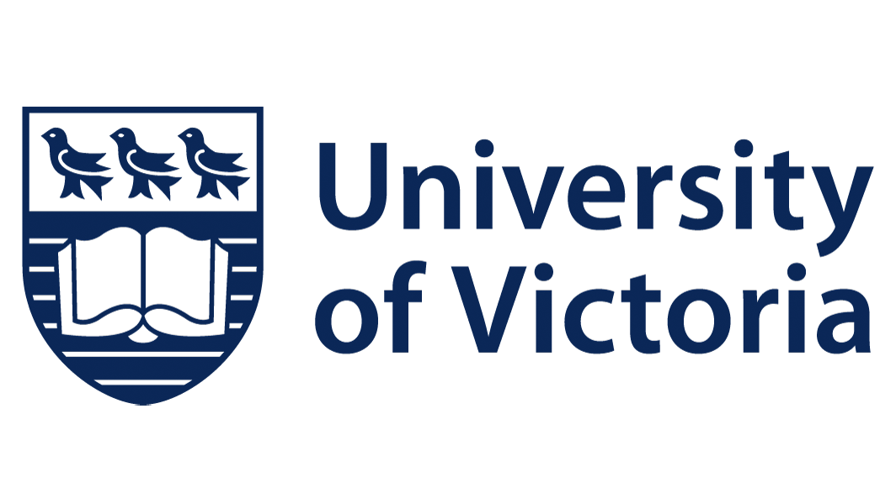

About Me
My Journey
I am a passionate software engineer and UVic co-op student with a strong foundation in web development and geospatial technologies. My journey in software development began with a curiosity about how technology can solve real-world problems.
Professional Experience
Software Developer Co-op
During my co-op term at Siteability, I worked as a full-stack developer. Being part of a small team at a tech startup provided me with unique experiences that are hard to find elsewhere. The founders—Logan, Asjad, and Talina—were exceptional mentors. Under the guidance of Logan, the tech lead, I gained invaluable insights into front-end development, writing quality code, and fundamental team practices. My time at Siteability also reshaped my perspective on work. It's not just about fulfilling your role but about finding ways to make a meaningful impact.
Education
University of Victoria
Bachelor of Science in Computer Science
Expected Graduation: 2026
Relevant Coursework:
- Software Engineering
- Data Structures and Algorithms
- Database Systems
- User Interface Design
- Operating Systems
Academic Achievements:
- Member of the UVic AI Club
- Active member of the Computer Science Student Society
- Participant in UVic's Co-op Program